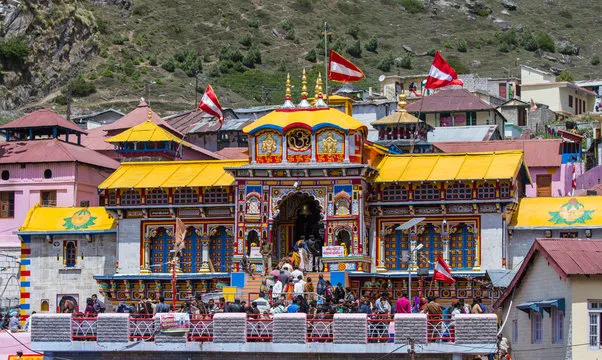

ABOUT BADRINATH TEMPLE

BADRINATH is one of the Vaishnavite holy places and is located in Chamoli district of Uttarakhand. There are 108 locations where Holi Vishnu has taken on human form, with Badrinath being one among the most significant.
Badrinath is also known as Badri Vishal in Hindu mythology due to its enormous size.
Adi GuruShankaracharya is claimed to have found Lord Badrinath and brought him back to this temple in the eighth century.
Numerous accounts of Hindu tales and scriptures can be found at this temple. Over time, the Mahabharata legends were ingrained in this temple and gave rise to numerous stories that are associated with this revered trip.
Shankaracharya discovered the black stone of Lord Badrinath on the Alaknanda River, and the king of Garhwal later placed it in this magnificent temple, which is guarded by Garud at its main entrance.
Similar to Kedarnath, Badrinath Temple is also an important part of 4 Dham Yatra and it is one of the four holy sites in the upper Himalayas which is included in the 4 Dham tour circuit.